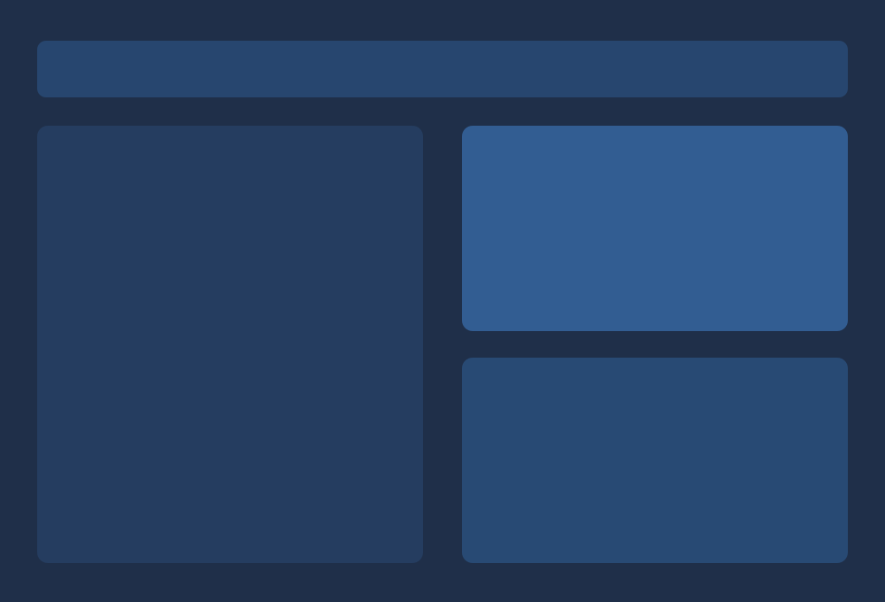
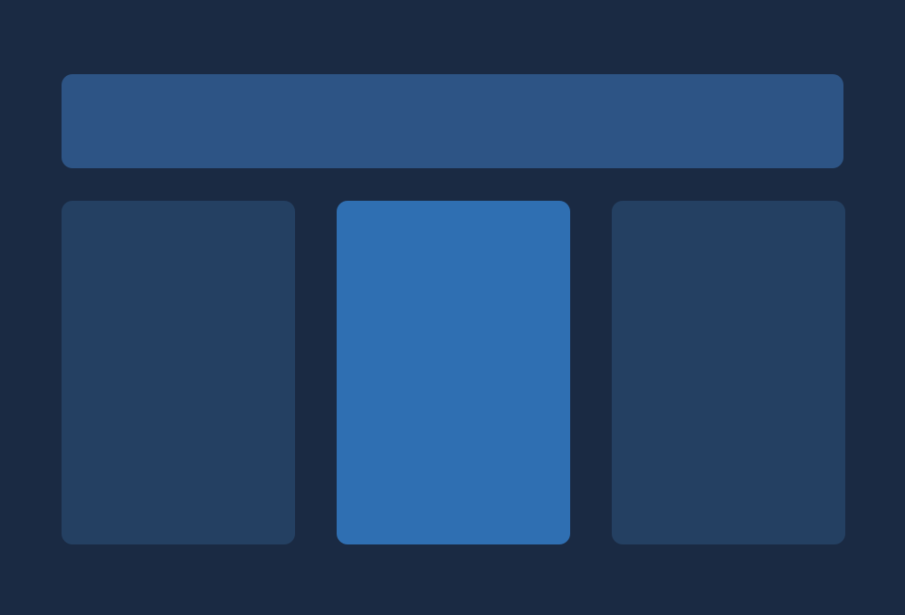
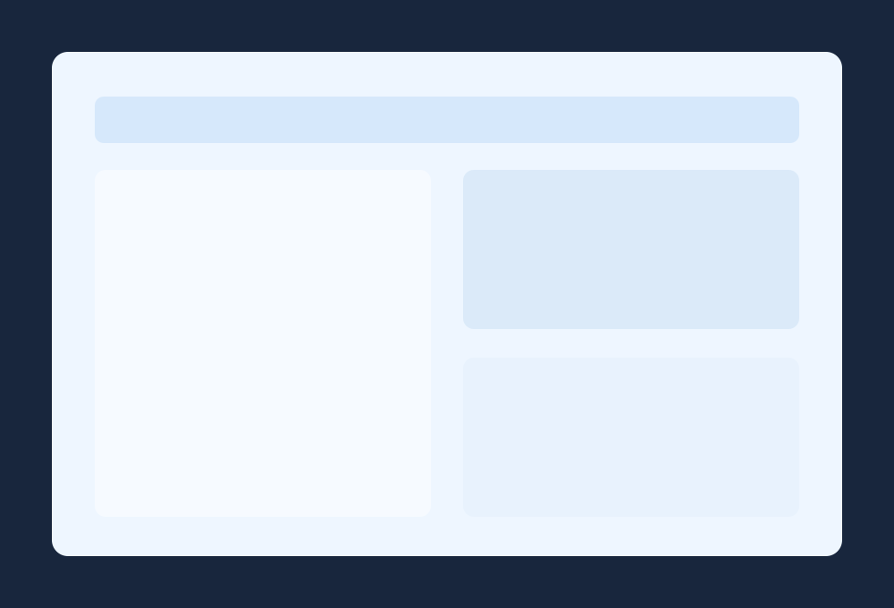

Role
UI/UX Designer
Overview
Add a short overview paragraph for this case study.
UI/UX Designer
Figma, WCAG Checks
6 Weeks
Problem
Patients were dropping from the booking flow due to readability issues, unclear hierarchy, and high friction form interactions.
Goal
Define a clear target outcome for the redesigned experience and align design decisions to measurable user impact.

Audited current journeys, user complaints, and accessibility barriers impacting conversion.

Defined target accessibility standards and simplified user path priorities.
This section highlights key interface explorations and final UI decisions that shaped the experience.
Delivered accessibility-first components and supported launch with QA and iteration feedback loops.
Impact
